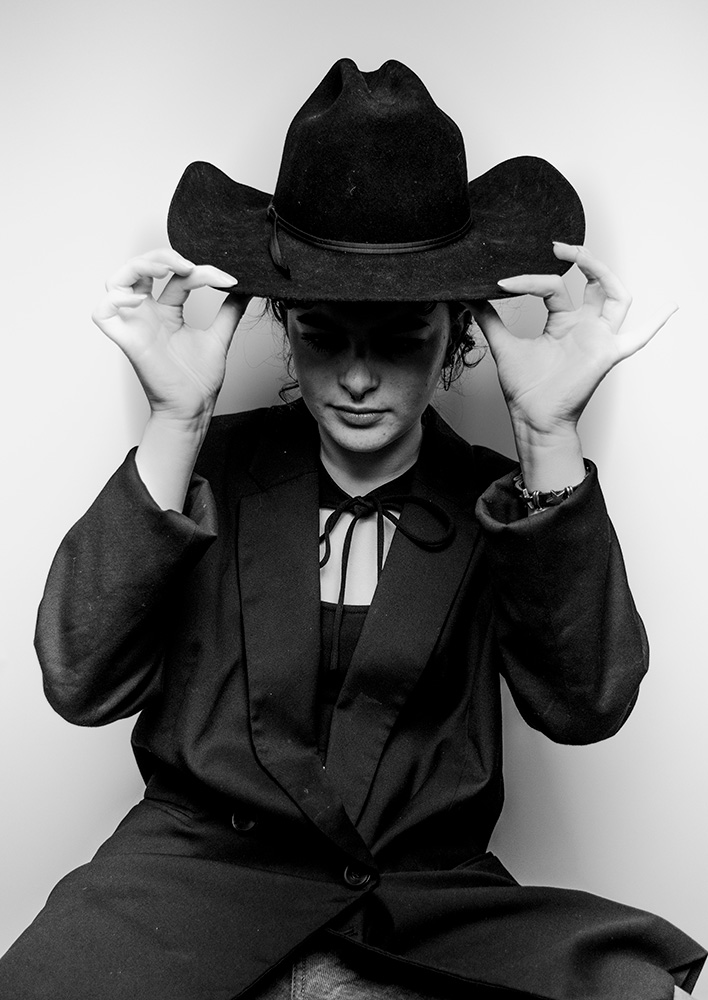
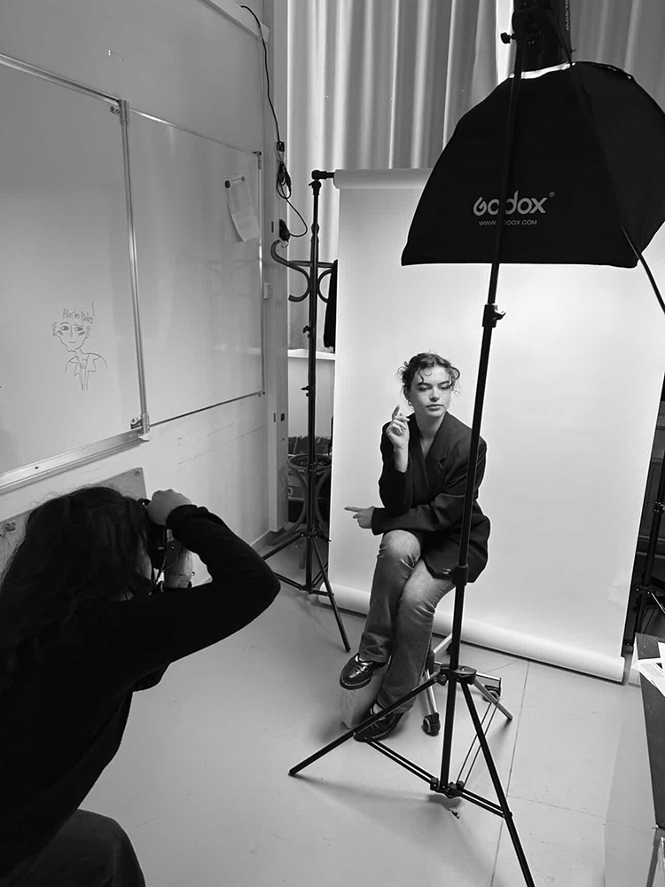
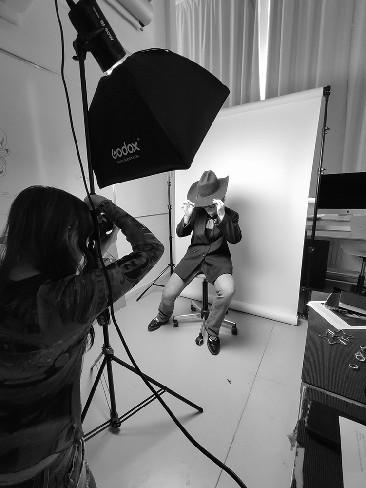

Ce projet consistait à recréer les photographies emblématiques du photographe Platon, en se concentrant particulièrement sur son travail minutieux de l’éclairage. L’objectif était de comprendre et de reproduire les techniques qui font la singularité de son style : des contrastes marqués, des ombres profondes et une lumière dramatique qui met en valeur les expressions et les textures. Avec tout le matériel professionnel à disposition nous avons pu endosser tour à tour les rôles de modèle et de photographe. Chaque séance a permis d’expérimenter différentes configurations d’éclairage pour capturer des portraits puissants, inspirés de l’approche minimaliste et percutante de Platon.
PHOTOGRAPHIE
L'IMAGE DE PLATON


